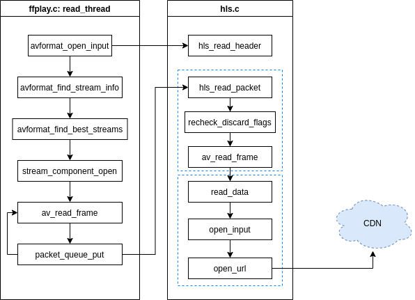
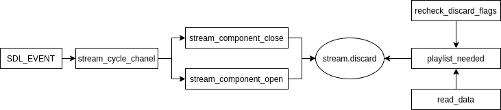
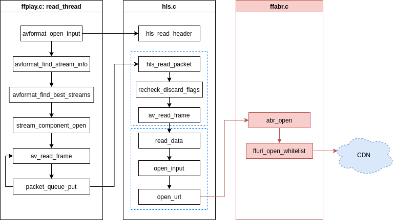
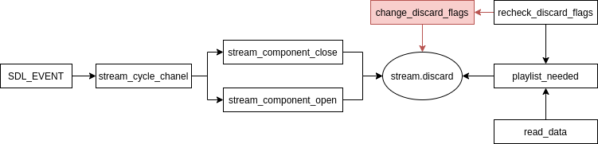

I participated in GSoC 2020, my project is “ABR meets FFmpeg” which aim to add an ABR module to FFmpeg. Here I will talk about my project in detail.
what are we talking about when we talk ABR in FFmpeg?
What is ABR?
Adaptive bitrate streaming is a technique used in streaming multimedia over computer networks.
It works by detecting a user’s bandwidth and CPU capacity in real time and adjusting the quality of the media stream accordingly.
The player client switches between streaming the different encodings depending on available resources.
–from wikipedia
ABR algorithms are classified into three broad categories: throughput-based, buffer-based, and hybrid schemes.
Throughput-based algorithms work by estimating the network throughput available between the client and server and using that estimate to decide on bitrate of next segment that is to be down-loaded.
Buffer-based algorithms predominantly use the level to which the buffer is full to decide on the bitrate of the next segment.
Hybrid algorithms use both throughput prediction and buffer levels in an attempt to exploit the advantages of both.
Why we need abr in FFmpeg?
Adaptive bitrate(ABR), aiming to pick next chunks’ bitrate to overcome the fluctuation of network conditions, is a non-trivial method to ensure good quality-of-experience (QoE) for Internet video (such as DASH and HLS). Exploring the aforementioned FFmpeg projects, however, lacks the essential ABR module. To that end, support ABR methods in FFmpeg.
What is different when add ABR to FFmpeg?
Adding ABR to FFmpeg have to adapt all things to FFmpeg, which is not a “real” player. Things are really limited in FFmpeg, abr in FFmpeg can not working like dash.js (dash reference player).
In dash.js, mechanism and information are already there. ABRControler should only deal with abr algorithms, others will be done with StreamController. Therefore, many researcher implement there own ABR algorithms and test them on dash.js.
In FFmpeg, there are no switch mechanism for HLS / DASH. So what really matters when implement ABR feature in FFmpeg is to build a switch mechanism.
As for ABR algorithms in detail, as I have said, things are limited in FFmpeg. Fancy ABR algorithms are not what we need in the begining, I choose the simplest throughput based algorithm. Maybe we could add more ABR algorithms to ffabr protocol in FFmpeg. (If we really need it.)
limitations in FFmpeg to implement ABR
There are several limitations in FFmpeg when implementing ABR:
No buffer
Segment download does not in a seperate thread.
- throughput estimate may not accurate.
What is done briefly
ffabr.c: an internal protocol.
- A throughput based algorithm.
- Return whether to switch, if so, to which variant.
hls.c: a switch mechanism.
- Use ffabr protocol.
- Switch between different variant.
- Return pkt transparently to ffplay.
ffplay.c:
- When use abr, process pkts to playback correctly.
Structure
original hls

segment download
hls use avio to manage segment data. In hls_read_data, after parse_playlist, hls will init avio for all playlists using:
1 | // INITIAL_BUFFER_SIZE is 32768 |
Function read_data is bind to avio’s read_packet, read_data basically do:
1 | /* read_data main structure - simplist |
In short, there is no buffer in segment level, hls will not buffer more segment of one playlist. hls only download a segment when the avio of the last segment is used up.
stream cycle (switch)
hls.c does not switch playlists spontaneously, ffplay.c call it.

ffplay initiate the switch
ffplay’s SDL event_loop will receive keyboard event ‘a’, ‘v’, ‘c’ to cycle stream channel. What is done in stream_cycle_channel(VideoState *is, int codec_type) is to get the stream_index of the given codec_type, then close the old stream and open the new one:
1 | stream_component_close(is, old_index); |
In stream_component_close(), it will abort and destroy the decoder, set stream->discard to AVDISCARD_ALL. In stream_component_open(), the decoder will be initied and stream->discard will be set to AVDISCARD_DEFAULT.
hls do the switch
Then, in hls.c, at the begining of hls_read_packet, function recheck_discard_flags will be called to check stream->discard flag, to see whether the playlist is needed. If there is a change, then the playlist switch happens.
There will be further influence after the discard flag is changed.
In recheck_discard_flags(), there is a for loop of all playlists, if one playlist changes to needed, then some parameters will be set to make sure this playlist can catch up to cur_timestamp.
In read_data(), it will return AVERROR_EOF if the playlist is not needed.
In hls_read_packet(), it will not call av_read_frame for playlists which are not needed.
user experience
It does not feel very good when you cycle streams in ffplay. The new stream will playback from the next segment to catch up, which is kind of annoying.
http_multiple
hls.c has a http_multiple option. When the http_multiple is enabled, each playlist will mantain another AVIOContext *input_next as well. In function read_data():
1 | /* read_data main structure - http_multiple |
It seems that http_multiple just download the next segment every time. It looks similar to a “buffer” but not. I do not really see the benefit of http_multiple.
http_persistent
http_persistent is really a good feature. It can reuse a http connection to download segments, which saves the resource and time to create a http request every time. When the http_persistent option is enabled, hls will call open_url_keeplive() instead of open_url().
1 | static int open_url_keepalive(AVFormatContext *s, AVIOContext **pb, |
Sadly, the proposed abr protocol may not support it. Just like crypto protocol, as a wrapper to call http protocol, it creates a http request for each segment. (Maybe we could see whether we can pass it further on.)
hls + ffabr
- Added ffabr protocol to download segment and return switch request, ffabr will be introduced later.

- When enable abr, there is a switch mechanism to switch variants, the most important thing is to change the
stream.discardflag properly.

ffabr protocol
ABR need information to make decision, in different ABR algorithms, it could be throughput , buffer state, etc. But as shown by read_data function in last section, there is no real “buffer” in current hls.c implement. hls.c will not download next segment until current segment has no data to read. As a result, we can never use a buffer based ABR algorithm unless we add a buffer to hls, which may be too complete and no reason to do.
So, in the first version of ffabr protocol, a throughput based algorithm is added. And it should be easy to add new algorithms to ffabr.
Protocol Design
When I want to design the abr protocol, firstly, I need to figure out the following mechanisms:
- How does hls call this abr protocol?
- How to get the results back to hls?
By studying crypto protocol and cache protocol, and reading the api of URLProtocol, I designed abr protocol:
abr protocol should be placed between demuxer hls/dash and http/https (simillar to crypto). It should get information from hls.c, call http/https as its sub protocol to download segments, collect the elapsed time, and return
URLProtocol has apis like:
1 | const URLProtocol ff_ffabr_protocol = { |
abr protocol will use AVOption metadata to communicate with hls.c.
abr-paramsis in type ofAV_OPT_TYPE_DICT, it works as input from hls to ffabr protocol. It contains following information:- format: hls / dash
- cur_var: current variant
- type: type of segment to be download
- can_switch: whether a switch request can be make
- n_variants: number of variants
- variant_bitrate#: bitrate of each variant
- n_throughputs: number of throughput data
- throughputs: throughputs in kbps
abr-metadatais alsoAV_OPT_TYPE_DICT, it works as output of ffabr protocol.
basic structure
In function abr_open, firstly, the url is checked to make sure it has a prefix of “ffabr”. After the input parameter dictionary abr_params is parsed, ffurl_open_whitelistis called to open sub protocols to download the segment, and the download time will be recorded(to calculate the throughput). Then, if the value of can_switch is true, an abr rule will be called (a simple throughput based algorithm for now, but we could add more) to see whether a variant switch is need in current network status.
The function abr_read() will call ffurl_read() to read from its sub protocol.
The function abr_seek() supports seek.
The function abr_close() will close sub protocol and do free works.
throughput based algorithm
An simple throughput based algorithm is implemented, whose main idea is to estimate throughput, and choose the variant with highest bitrate we could afford.
To avoid bitrate oscillation, the algorithm will not make switches if bw_estimate is close to current variant’s bitrate. Then we will choose the variant with highest bitrate smaller than bw_estimate. If the ret is same to current variant, then no switch is needed.
There is some restrain of the throughput based algorithm. The bw_estimate is the harmonic mean of the most recent ABR_THROUGHPUT_FIFO_LEN samples. Since the segment is download by http/https protocol, and ffabr can only record the time of ffurl_open_whitelist, the download time could be larger than the real value.
switch mechanism
To achieve best user experience, we cannot take ffplay’s stream cycle way to switch between variants. Instead, the implemented switch mechanism will be transparent to ffplay.
There are two main purpose of the switch mechanism:
- The switch should be make at the exact time of the end of a segment.
- The downloaded segment should not be wasted.
Some features of HLS should be concerned:
Variant
- Each Variant Stream MUST present the same content.
- Matching content in Variant Streams MUST have matching timestamps. This allows clients to synchronize the media.
- Matching content in Variant Streams MUST have matching timestamps. This allows clients to synchronize the media.
Rendition Groups
A set of one or more EXT-X-MEDIA tags with the same GROUP-ID value and the same TYPE value defines a Group of Renditions. Each member of the Group MUST be an alternative Rendition of the same content.
The restrain of variants make sure we could switch between the playlists which contains same type of content without any timestamp problem. The rendition group means there could be variant constructed by several renditions. The audio and video could be separated to different files, which means they may have different duration for their segments. The switch time of audio and video could be different.
Take all these to consideration, the switch mechanism is implemented as following:
- Parse the return
abr-metadatafrom ffabr protocol, check whether a switch request is made - Add switch_task for each playlist in target variant, the switch_timestamp would be calculated properly
- In function
recheck_discard_flags(), if the switch_timestamp of remained switch_task reached thec->current_timestamp, then the discard flag of the streams in the playlists of the target variant will be set toAV_DISCARD_DEFAULT, and all the streams in other playlist which have same type with the targeted one should be set toAV_DISCARD_ALL. - Then
avio_flush(&pls->pb)andavformat_flush(pls->ctx)is called to avoid decode error. - In
hls_read_packet(), above variant switch should take effect just at the first timestamp of the new segment. So the functionav_read_frame()returns pkt of switched variant now. - ffplay get the packet, add to corrosponding queue, and play.
calculate switch_timestamp
To calculate switch_timestamp, the following information is needed:
- The index of segment switch to.
first_timestampof stream, will be used to calculate segment timestamp.delta_timestampof stream( the duration of one packet), will be use to calculate the last timestamp of a segment.
first_timestamp and delta_timestamp are initiated at the begining.
skip mechanism in read_data
we will need two skip mechanism inread_data() to prevent waste of downloaded segment.
The first one is at the beginning of read_data(), when hls get the switch_request from ffabr, the current playlist is needed, but we do not need the next segment of this playlist. read_data() should return AVERROR_EOF.
The second one happens when we enable http_multiple option. If the input_next has been requested, we need to pass the first one skip, allow it to swap input_next to input, but skip download next segment to input_next since the switch request has been made.
a switch example
Here shows a switch example:
- the hls manifest “master.m3u8”
1 | #EXTM3U |
- ffplay command using abr, here are the log
1 | $ ./ffplay -i http://localhost/live/master.m3u8 -abr -v info |
As we can see, in this test, it seems that ffplay’s av_find_best_stream choose the variant 2, but the variant 3 has better quality. After download the segment “out_23.ts”, ffabr return a switch request to variant 3. Then 2 switch tasks are add, video and audio stream will switch at different timestamp, since there segment are generated sperately.
As time went by, audio stream first switched from playlist 0 to playlist 1at timestamp 7433333, then, video stream switched from playlist 4 to playlist 5. From then on, switch are finished, and ffplay played variant 3 then.
We could set loglevel -v verbose to see more details.
ffplay playback problem
problem explanation
- Currently in ffplay, all stream packets will be added to packet list in ffplay when call function
avformat_find_stream_info()inread_thread(all these are before AVDISCARD_ALL are set to streams). After this, ffplay will callav_find_best_stream()to decide which stream to be reserved. - Later, ffplay will check the
pkt->stream_indexand callav_packet_unref(pkt)to discard pkts from unwanted stream. - There are no such “unwanted stream” when we use abr. Since we do not use ffplay’s switch mechanism and switch streams transparently, ffplay should accept the packets read from different variants, and add them to its packet queue.
The 3 has conflict to 1 and 2, will cause playback error in the beginning if we do not deal with it correctly.
Solutions
Solution 1
1 | int ff_packet_buffer_filter(AVPacketList **pkt_buffer, |
Solution 2
I tried to setup AVDISCARDflags after hls_read_header(), which will prevent av_read_frame() to read other streams. But there are 2 problems:
I can use variant’s bandwidth only to determine which one is the best stream, not
av_find_best_stream(). It will cause problem if two results are different, so I even need to disableav_find_best_stream().Will cause warning:
1
Could not find codec parameters for stream 2 (Video: h264, 1 reference frame ([27][0][0][0] / 0x001B), none): unspecified size Consider increasing the value for the analyzeduration' (0) and 'probesize' (5000000) options".
Solution 3
Add an metadata abr_initial from hls to ffplay, tell ffplay to allow other streams after the timestamp of stream_start_time + abr_init_duration, but ffplay should discard the unwanted packets before that timestamp.
The exactly packet number added is depend on stream, but it should be less than the packet number in the segments which are downloaded during hls_read_header().
Solution comparation
The solution 1 and solution 3 can both fix the problem. But I got feedback from FFmpeg community review, we don’t want to add such an api. Maybe solution 3 is more acceptable.
Further work could be done
Test more HLS manifest examples.
I have tested some different HLS manifest. I would find some bugs every time when I test a new manifest. So it will benefit to test more manifest examples.
Have DASH support.
I just support HLS currently, we should support DASH further on.
Add more abr algorithms to ffabr.
There is just one simple throughput based algorithm now. Although it is difficult to implement complex ABR algorithm in FFmpeg, we could try some.
Final words
Thanks to my project mentor Steven Liu, Jun Zhao, Andreas Rheinhardt, Nicolas George, Martin Storsjö, Moritz Barsnick for such a wonderful experience.
For ABR in FFmpeg
At very first, I thought the project adding ABR module to FFmpeg would be like algorithm design more. I was totally wrong, implement ABR in FFmpeg is not like dash.js, where you can get everything, and just focus on abr algorithm itself. I have to go deep into FFmpeg to learn how things are working here. It took me plenty of time to learn avformat, avio, avoptions… and that is just the first step to implement ABR.
As I learned more about FFmpeg, I generally understand that ABR in FFmpeg can never be something like dash.js. The two project have different purpose. What I should do is not to copy dash.js to FFmpeg, but write ABR in FFmpeg’s way. It may be look simple, but it is what we want.
In my perspective, my implement is not that perfect (although I tried to). There are still many things can be improve. I am not sure my code could be merged, but at least I took several months to prove that whether it is a good idea to add ABR to FFmpeg.
For GSoC
GSoC was an impressive experience for me.
Firstly, I really learned a lot about free and open-source software(FOSS), both in philosophy and reality. I even read the book Free Software, Free Society: Selected Essays of Richard M. Stallman. I am shocked by the word written decades ago, and feel fortunate to have these pioneers, or maybe we would have a world full of proprietary software now, which is a disaster.
Secondly, I understood more about open-source project such as FFmpeg. I have read lots of discussion in FFmpeg-devel mailing list, for example, Nicolas George posted a thread on Project orientation in July, which have been discussed widely. Through these discussions I knew the pain in FFmpeg.
Thirdly, I have become a better programmer. I learned a lot of useful skills, use GDB for debugging, Git for version control, valgrind for memory leak checking. My mentors Steven Liu, Jun Zhao taught me what a good commit should be. FFmpeg contributers and reviews taught me how to write robust code. I prepare myself to contribute to FOSS.
SJTU should be one of the best universities in China, but few student here really understand FOSS. I feel responsible to introduce FOSS to my friends and classmates. I don’t see good FOSS environment in China, maybe we could make it better.
Regards,
Hongcheng Zhong
spartazhc@gmail.com